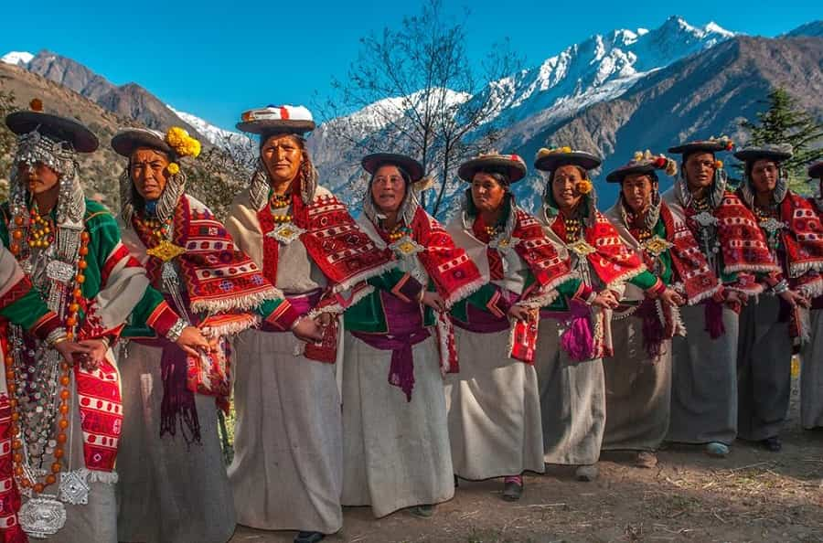

Welcome to Himachal Pradesh!

Himachal Pradesh, nestled in the lap of the Himalayas, is renowned for its breathtaking landscapes, rich cultural
heritage, and serene spirituality. This northern Indian state offers a unique blend of traditional hill culture,
adventure tourism, and spiritual retreats, making it a beloved destination for travelers seeking natural beauty
and cultural experiences.
Festivals in Himachal Pradesh are vibrant celebrations that reflect its cultural diversity and deep-rooted
traditions. The state celebrates various festivals throughout the year, with each region showcasing its unique
rituals and customs. The Kullu Dussehra, celebrated in the Kullu Valley, is particularly famous for its week-long
festivities, cultural performances, and processions of deities from local temples. Other significant festivals
include Diwali, Lohri, and Losar (Tibetan New Year), each bringing communities together in joyful celebrations.
Himachali cuisine is hearty and reflects the region's mountainous terrain and agricultural practices. Staple foods
include rice, wheat, and maize, often served with dal (lentils) and vegetables. Dishes like Siddu (steamed bread),
Dham (a traditional meal served during festivals), Chana Madra (chickpea curry), and Babru (black gram pancakes)
are popular. Apples and cherries from Himachal's orchards are famous, contributing to the state's reputation for
fresh and delicious produce.
Music and dance are integral to Himachali culture, with each district having its own distinct folk traditions. The
Nati dance, performed with simple yet elegant footwork and accompanied by traditional instruments like the dhol
and nagara, is a popular folk dance form. Various folk songs, including Kangri and Chamba Rumal songs, narrate
tales of love, nature, and everyday life in the hills. These cultural expressions play a significant role in
preserving Himachal's cultural identity and heritage.
Himachal Pradesh's architectural heritage is characterized by its traditional wooden temples, hilltop forts, and
colonial-era buildings. The temples of Chamba, such as Lakshmi Narayan Temple and Chamunda Devi Temple, exhibit
exquisite Himachali architecture with intricate wood carvings and stone sculptures. Shimla, the former summer
capital of British India, features colonial buildings like the Viceregal Lodge and Christ Church, blending British
and local architectural styles.
Handicrafts in Himachal Pradesh showcase the artistic skills of its people, with products ranging from hand-woven
shawls (such as Kullu shawls and Chamba rumals) to metalwork, pottery, and woodcarving. The Kangra School of
miniature paintings, known for its intricate detailing and vibrant colors, is another hallmark of Himachali
craftsmanship. These handicrafts not only serve as cultural symbols but also contribute to the livelihoods of
artisans across the state.
Himachal Pradesh's natural beauty is unparalleled, with snow-capped mountains, lush valleys, glistening rivers,
and serene lakes attracting nature lovers and adventure enthusiasts. Popular destinations like Manali, Shimla,
Dharamshala, and Dalhousie offer opportunities for trekking, skiing, paragliding, and spiritual retreats amidst
pristine surroundings. The state's biodiversity, including wildlife sanctuaries like Great Himalayan National
Park, adds to its allure as a haven for eco-tourism and wildlife conservation.
In conclusion, Himachal Pradesh's culture is a harmonious blend of spirituality, traditional hill life, artistic
expressions, and natural splendor. Its festivals, cuisine, music, dance, architecture, handicrafts, and landscapes
offer a captivating glimpse into the soul of the Himalayas, making it a cherished destination for travelers
seeking both adventure and cultural immersion in India.